But now I feel more confident and wish to polish my public speaking abilities, cause I know it's never too late to start.
Sunday May 20 2012
MAY 19, UEFA CHANPIONS LEAGUE
AFTER watching yesterday's match I wondered if these two teams really deserved to play in the finals of UCL? I may not be knowing much about football but as a spectator I felt disgusting and sleepy watching this boring match, what were they doing the first 80 mins if they had to play for only 10 mins?
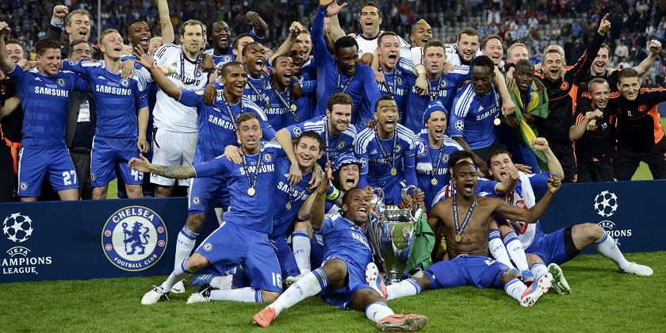
I am neither a Bayern Munich supporter nor a Chelsea suporter but I may tell you that BAYERN MUNICH did have bad luck, after getting around 20 corner kicks they could not get a goal where as CHEALSEA got one corner kick nd made full use of it, lucky guys! FEELING SORRY for Bayern Munich as they gave a nice fight but got defeated by destiny. Of course DROGBA and TORRES played well. If coach Roberto Di Matteo allowed torres to play from the first then it would hav been a more interesting game to watch.
Tuesday February 7 2012
FIRST EXTEMPORE
Today I had my English test and it was my first time speaking in front of the class, where each one of the five selected students were shown three pictures. From those pictures each student had to speak about a topic for one minute without unecessary pause.Among the three choices I chose to speak about the traffic disturbance caused by stray animals. I stood still in front of the whole class, shaking with nervousness and skipping heart beats. I couldn't speak more than 20 secs when my feet started shaking. Everyone was staring at me, I was consoling myself that I can do that but I failed. My English teacher asked me "Do u want to speak later on?", without giving it a second thought I replied her "yes ma'am". Thanks to ma'am that she allowed me to speak for the second time. I came back to my seat and thought of changing the topic. Time passed by very quickly and my turn came. This time I did not wanted to loose it so I spoke about a picture showing, a girl learning karate. Though I was shaking I started to speak with a smile on my face. This time I spoke more confidently as compared to the last time but not very well as I couldn't end it properly as there were no points left. After it ended I wished that again I could speak and let everyone know what I felt while speaking for the first time. But now I feel more confident and wish to polish my public speaking abilities, cause I know it's never too late to start.
Today I could understand how difficult it is to speak in public, hats off to them who carry themselves on-stage so well. But one thing I learned, with practice one can become a good speaker in public and I hope, I shall get more opportunities like this so that I can overcome my fear of speaking in public.
Tuesday January 3 2012
FRIENDS OCCUPY A SPECIAL PART OF LIFE. Love you ALL!
MISSING you GUYS A LOT IN this AUSPICIOUS DAY.PLEASE GOD GIVE BACK THOSE DAYS. AGAIN I WANT TO FEEL AND CHERISH THOSE MEMORIES. MISSING the SCHOOL, the GROUND, the BENCHES WHERE WE USED TO SPENT time- LAUGHING, TWITTERING, EATING TIFFINS BEFORE RECESS, PLAYING "DAMSHERAAJ" FOR the WHOLE DAY, STARING AT the BOARD BuT NOT UNDERSTANDING A SINGLE WORD, TRUTH AND DARE GAMES, PNPC's, CURIOUS ABouT KNOWING WHO PROPOSED WHOM, GIVING TIPS TO FRIENDS TO OVERCOME THEIR WORRIES, imitating TEACHERS, ROAMING AT THE CORRIDOR AS IF BELL did not RaNG, BUNKING CLASSES, CHEATING during exAMINATION thereby CALLING IT A "DISCUSION", WRITING ON LEG, PALM, CARRING CHEATS DURING ASSIGNMENTS, FUN WITH TEASCHERS, PLAYING TO OUR HEARTS FULLEST,TAKING RESPONSIBILITY DURING PROGRAMS, LEARNING NEW WORDS[equivalent to SLanGS], CONFUSING TEACHERS WITH DIFFERENT ANSWERS, Bursting BOMBS, SAVING FELLOWMATES BY SHOWING UNITY AGAINST TEACHER, COMPLAINING AGAINST TEACHERS. AND THEIR'S a LOT MORE. THIS SONG IS FOR ALL THOSE WHO ARE MISSING THEIR SCHOOL DAYS AND WANT THEM BACK.
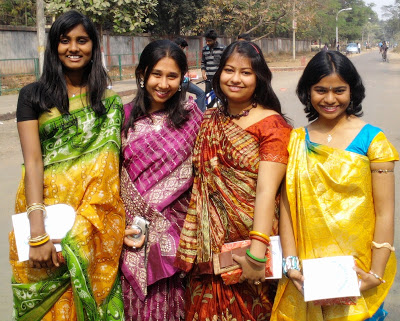
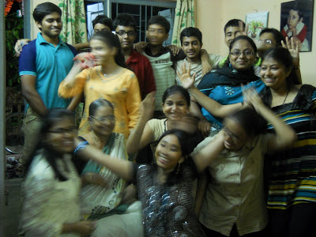
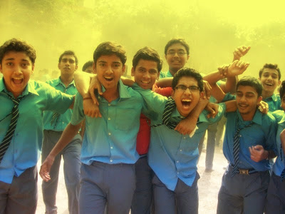
Tuesday January 3 2012
"Life is so complicated"
I want to call you but you won't pick up
I want to invite you but you won't come
I want to explain it to you but you won't listen
I want to ask you but you wont answer
I want to state it bt you will ignore it
I love u, but you wont pay attention to it
It's all in my mind and I did expressed it.
I already have the NO and I know that if I take risk then also it will be a NO.
Smiling in front of people but dying inside.
Monday January 2 2012
Bhalobasa caye na chere Jete.
Bisash toh kore chilam onek e,
Ceye chilam sudhu tomake e,
Joto e filthy r dirty hoye jao na keno ei jibon e,
Sob somoy shera hoye thakbe tumi amar jibon e,
Mone pore tomar onek kotha,
Kintu ei ashaya na hoye jai nirasha.
Friday December 30 2011
WORDS WHICH WERE NEVER SPOKEN.
I am really proud of my brother. HATS OFF to HIM. IF I WAS IN HIS PLACE I dont think I would have sacrificed so much. In the past 16 yrs I have never spoken these words to you. Now also I can't tell you over the phone but writing this down so that you may see it and a small smile may pierce your cheeks by reading it and also sorry if I made you angry or embarrassed by sharing it on FACEBOOK, believe me I never had such intentions. You are really a genuine person and I am lucky to have you as my brother. I know that I am young and immature and I don't have any right to advice you but I can't stop myself from telling you that "DO WHAT you WANT, WE ARE ALL WITH you".. Love you ALWAYS!!!
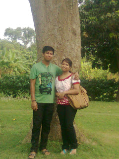
Monday July 26 2010
First step!!
This is the first time I am starting to write in a blog. Everyone may think "what is so great about it",but I want to tell you all that neither can I write nor speak English fluently, so if you find any mistake then let me know about it in your comments. I want to see whether my thoughts are good enough or whether I have a bad idea about the things around us. I am very nervous and also excited. Let me see what happens, fingers crossed. I would look forward to your suggestions and also try to place my thoughts in front of you. I am feeling happy on seeing my blog being posted.
 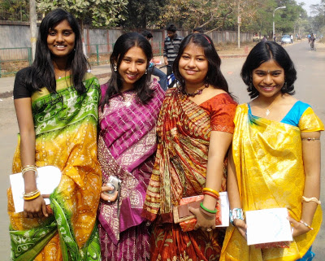
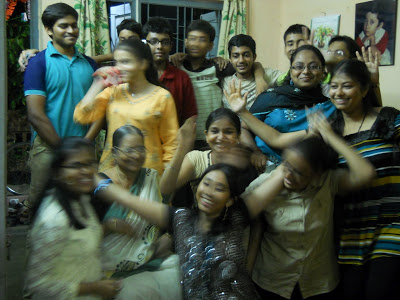
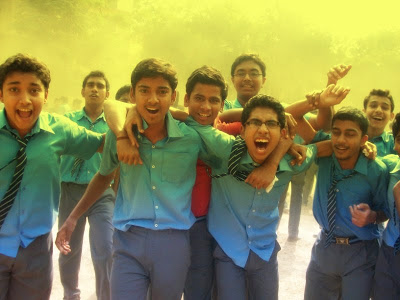
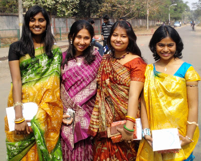
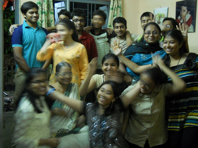
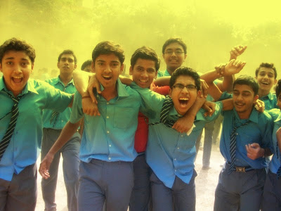